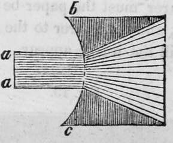
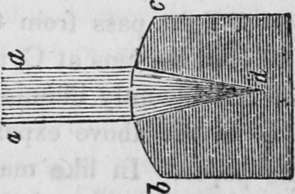
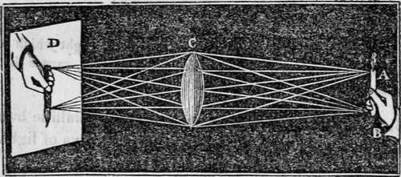
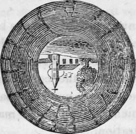

The Sense Of Sight. Part 5
Description
This section is from the book "Human Physiology For The Use Of Elementary Schools", by Charles Alfred Lee. Also available from Amazon: Human Physiology, for the Use of Elementary Schools.
The Sense Of Sight. Part 5
24. Now let us take a concave lens, and see what effect that will have on the light.
A, a solid oblong piece of glass; a, a, a stream of light which strikes the surface of the glass b, c, and which being concave, causes the light in its passage through it to diverge.
25. Now try a convex lens, such as the crystalline humour of the eye, and see how that will affect the rays of light.
We see that this form of glass causes the rays of light a, a, to converge to a point, or focus at d; and if it was stiff more convex, they would come to a point still nearer. We are now able fully to understand how it is that the humours, or lenses of the eye collect the light from visible objects, and converge them into an image upon the retina. These media, we have seen, are four in number, viz., the cornea, the aqueous humour, the crystalline lens, and the vitreous humour; each possessing a different density, different sphericity, and consequently different refractive powers.
26. Now let us examine the principle on which an image is formed. This may be shown by holding a common sunglass opposite a window in a room, and placing a sheet of paper behind it. We immediately see depicted on the paper a perfect image of the window, diminished according to the convexity of the glass, but inverted. The greater the con convexity, the nearer must the paper be held to the glass ta receive the image, and the nearer to the window the glass is held, the larger will the image appear..
In this cut, rays of light pass from the candle, and the hand A, B, and falling on the lens at C, are conveyed to the paper D, which is consequently illumined with the object in the same way as in the above experiment, the window was painted on the paper. In like manner precisely, are images painted on the retina, as is shown in the following cut.
stationary of in motion. Now, suppose a person was looking at a church with a tree standing at its side, he would have in each eye an actual inverted panorama of the objects, painted in a more beautiful, correct, and delicate manner than any effort of art can ever hope to exhibit, as follows.
28. But if the images of objects are inverted, why do we see things erect ? Locke, Buffon, Diderot, and other great philosophers, supposed that infants at first see things upside down, and afterwards learn to correct their erroneous sensation, by comparing the information obtained by touch with that acquired by sight. And not only this, they maintained that infants see every object double, and all at the same distance, until experience corrects their errors. Berkeley, however, contended, that we judge of the position of objects by comparing them with our own ; and as we see ourselves as well as every thing else wrong side up, or inverted, external bodies are in the same relation to us as if they were erect. But in that case, the boy who stoops down and looks at objects between his legs, ought certainly to see them wrong side up ; but though a little confused perhaps at first, he soon sees in that way as well as any other. This difficulty is easily explained by what is called the law of visible direction ; that is, each point of an object is seen perpendicular to the point of the retina on which its image falls. The surface of the retina being concave, and nearly as possible spherical, these lines of visible direction meet and cross at a point within the eye, which is called the centre of visible direction ; the lines from the upper part of the image go to the lower part of the object, and those from the lower part of the image proceed to the upper part of the object. Thus an inverted image necessarily produces an erect object, and the external object is the thing to which the mind attends, and not the object on the retina. The error of all these philosophers has consisted in this, that they have imagined a true picture to be formed on the retina, which is regarded by the mind, and therefore seen inverted. But there is no interior eye to see or take cognizance of this image ; but the mind accurately refers the impression made on the retina to the object producing it. In short, the mind stands behind the retina and looks at objects as they are through this screen, but it does not see the screen itself, but judges of the position of objects by the direction in which the light comes from them towards the eye ; and as Arnott well remarks,-" no more deems an object to be placed low because its image may be low in the eye, than a man in a room into which a sun beam enters by a hole in the window shutter, deems the sun low because its image is on the floor,"
29. Again, why, as we have two eyes, does not every object appear double ? The reason is, that in the two eyes are corresponding points, so that when a similar impression is made on both, the sensation, or vision, is single. Now, we have the faculty of so directing the axis of the eyes, that the image of an object falls exactly on the same point in each ; but if from any cause there is the least disturbance, then vision becomes double, as often happens to the drunkard. This is easily known by slightly pressing a finger on the ball of either eye, so as to prevent its following the motion of the other. Persons who squint always have double vision, but then they acquire the power of attending to the sensation in one eye at a time. Animals that have the eyes placed on opposite sides of the head, possess in a more remarkable degree the faculty of thus attending to one thing at a time,
Continue to:
Tags
humans, anatomy, skeleton, bones, physiology, organs, nerves, brain